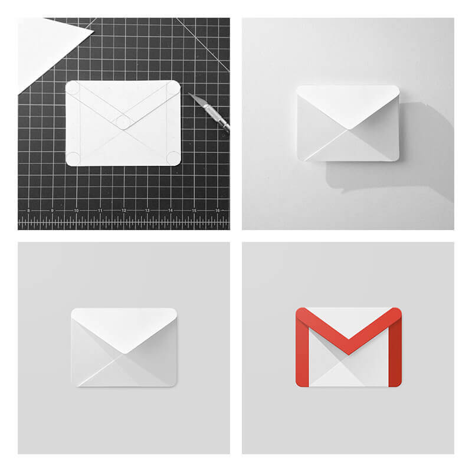
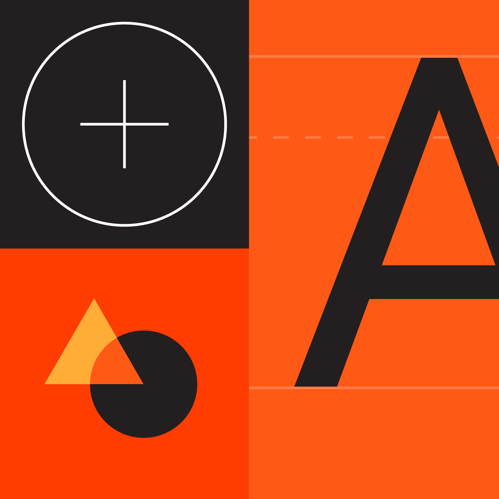
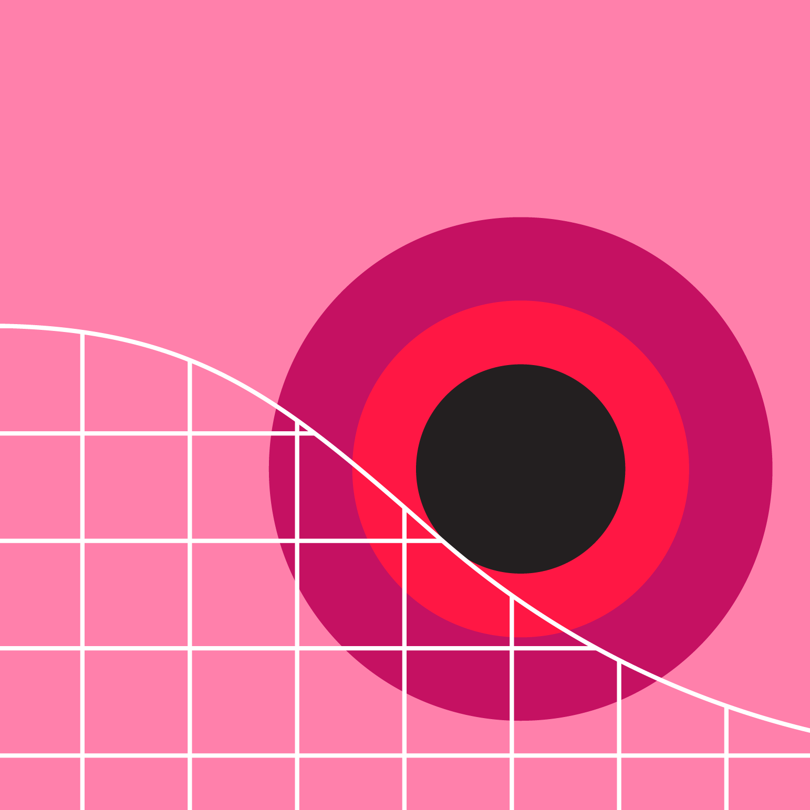
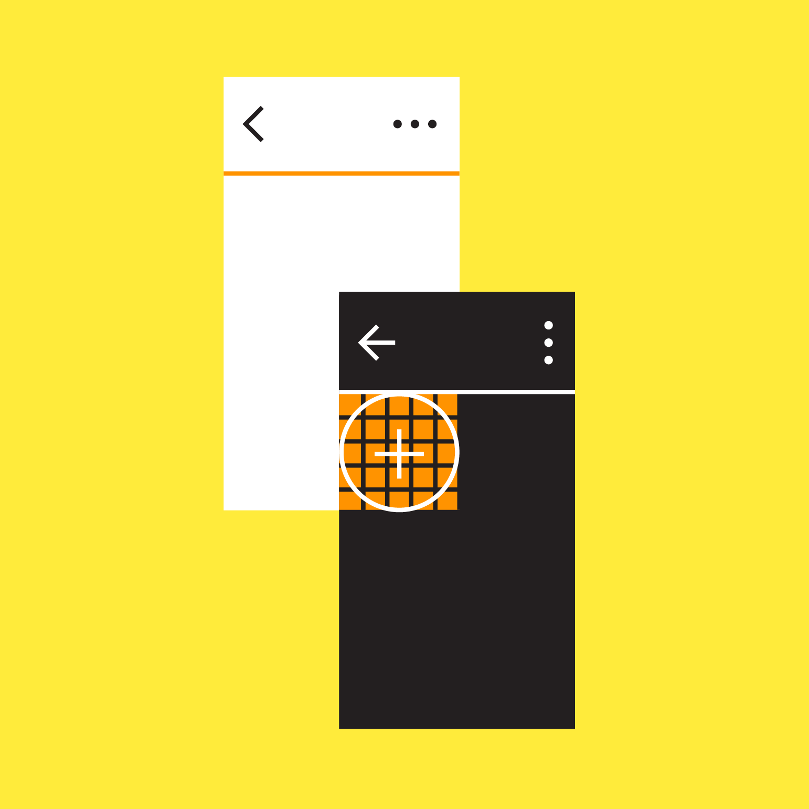

Material... How About This Design?
Brutalism, Minimalism, Vaporwave, Retro, Futuristic... There’s so many design styles out there it can be tough to stay on top of them all!Here at How About This Design? we help you choose your next great design by showing you real-world examples of various different design styles. Choose a style from the menu below, and watch this site morph right before your eyes!
The content of the site stays mostly the same, it just shifts around, changes palettes, and
gets a bit aesthetically funky.
At the bottom of this page are examples from various categories (product design, banners, merch,
etc.) that showcase a more specific breakdown of your chosen style.
We hope you find this useful!
About This Design:

Material is the metaphor
Material Design is inspired by the physical world and its textures, including how they reflect light and cast shadows. Material surfaces reimagine the mediums of paper and ink.

Bold, graphic, intentional
Material Design is guided by print design methods — typography, grids, space, scale, color, and imagery — to create hierarchy, meaning, and focus that immerse viewers in the experience.

Motion provides meaning
Motion focuses attention and maintains continuity, through subtle feedback and coherent transitions. As elements appear on screen, they transform and reorganize the environment, with interactions generating new transformations.
